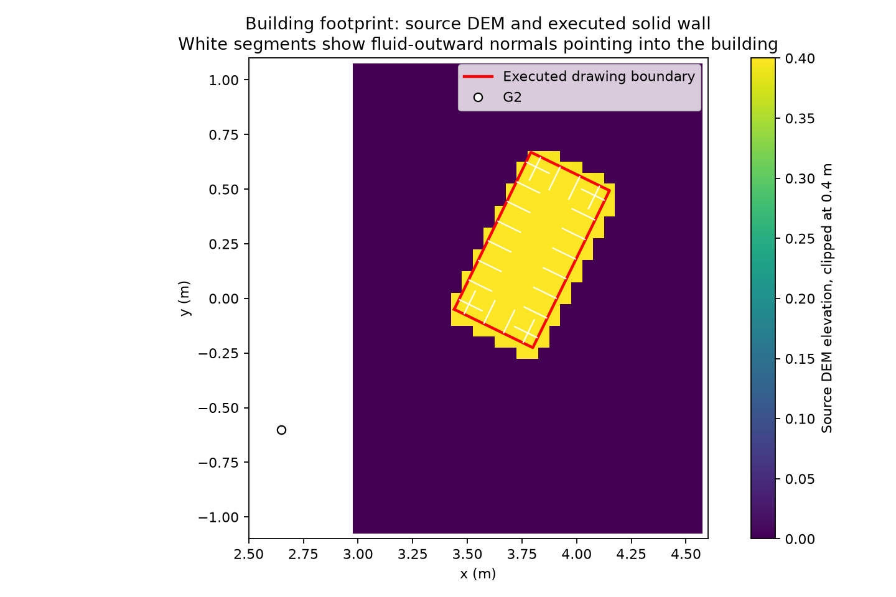
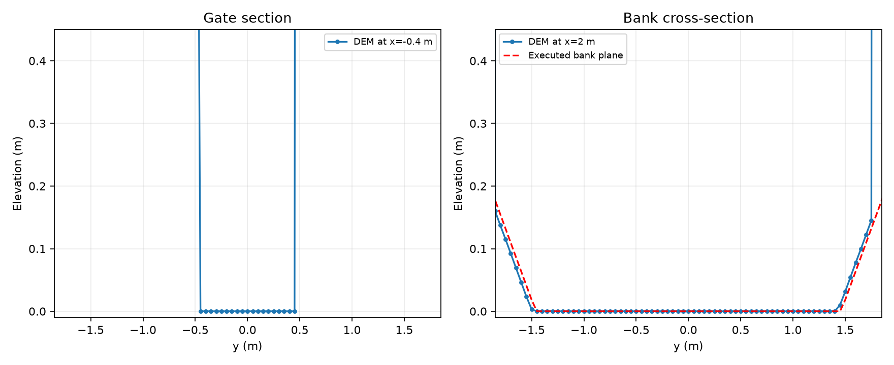
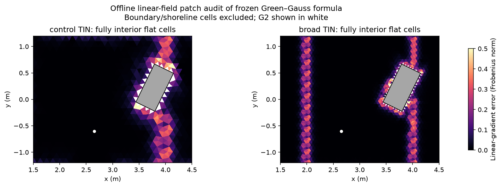
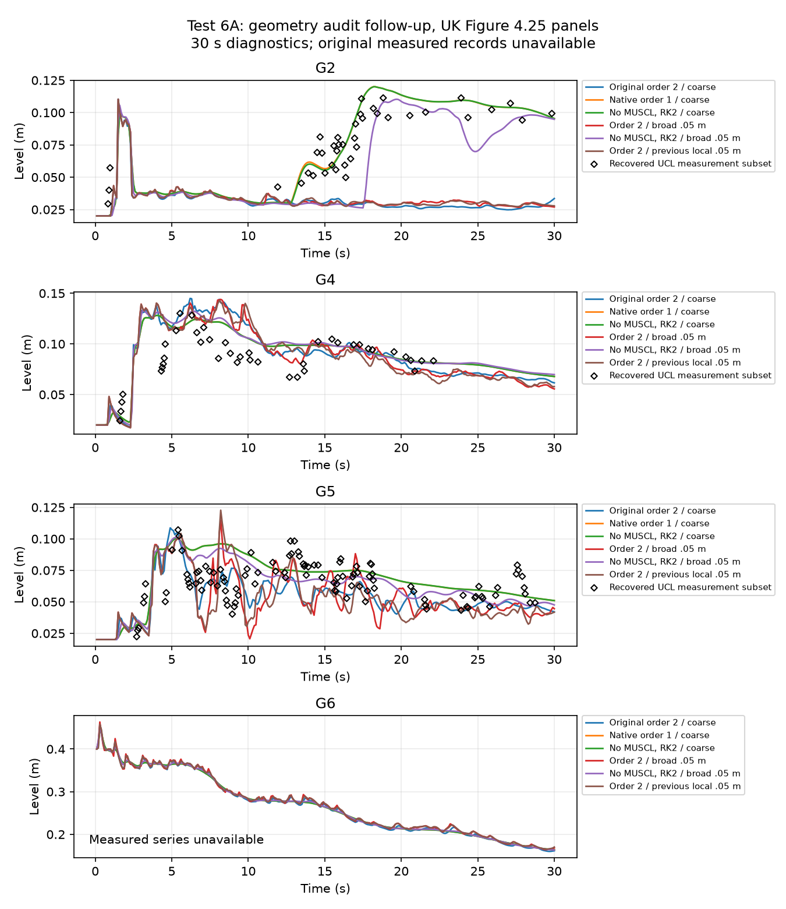
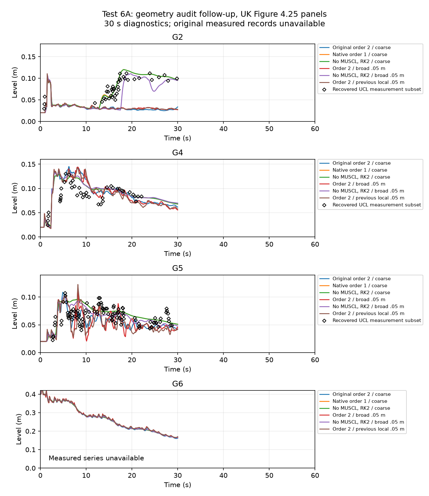
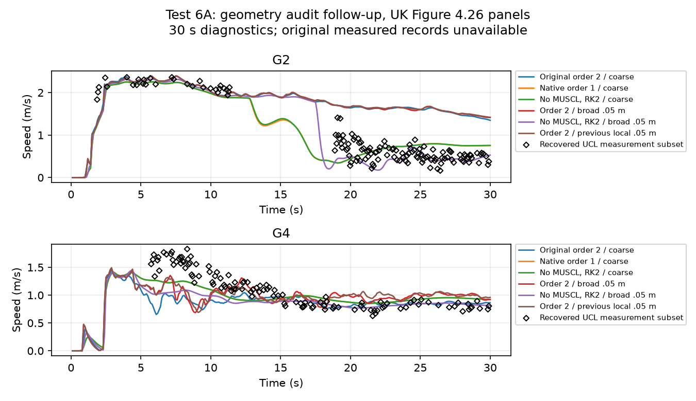
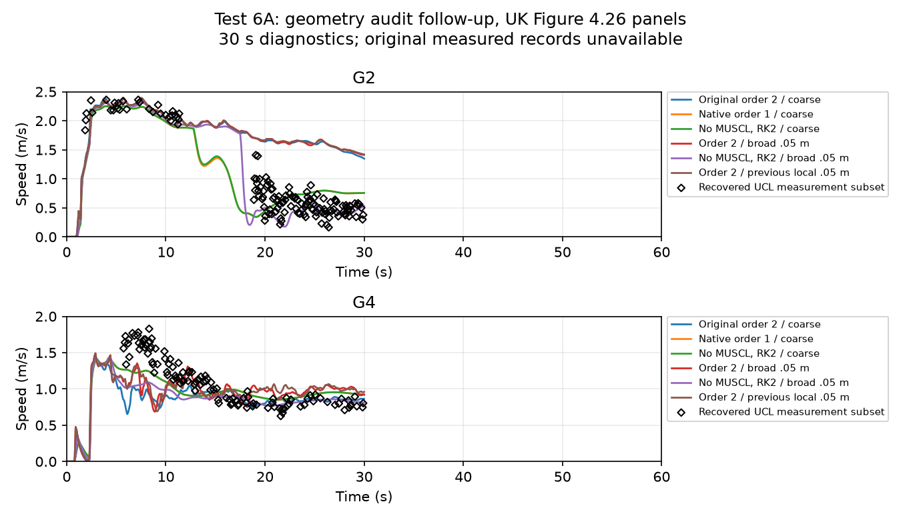
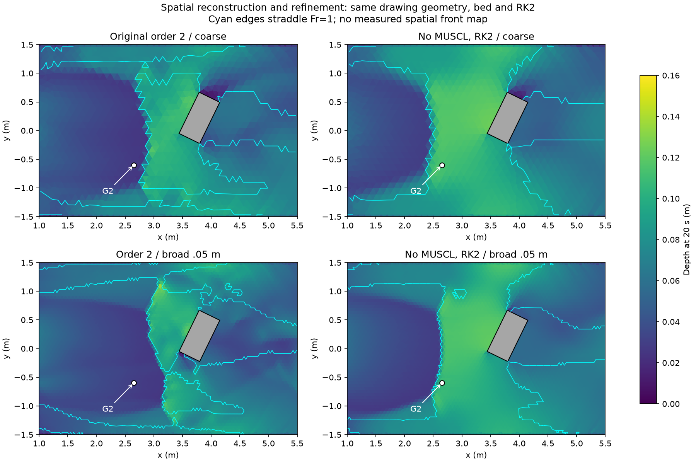
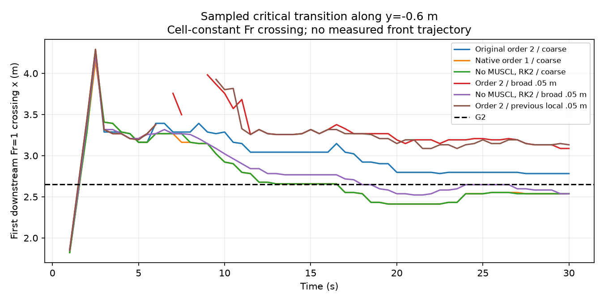
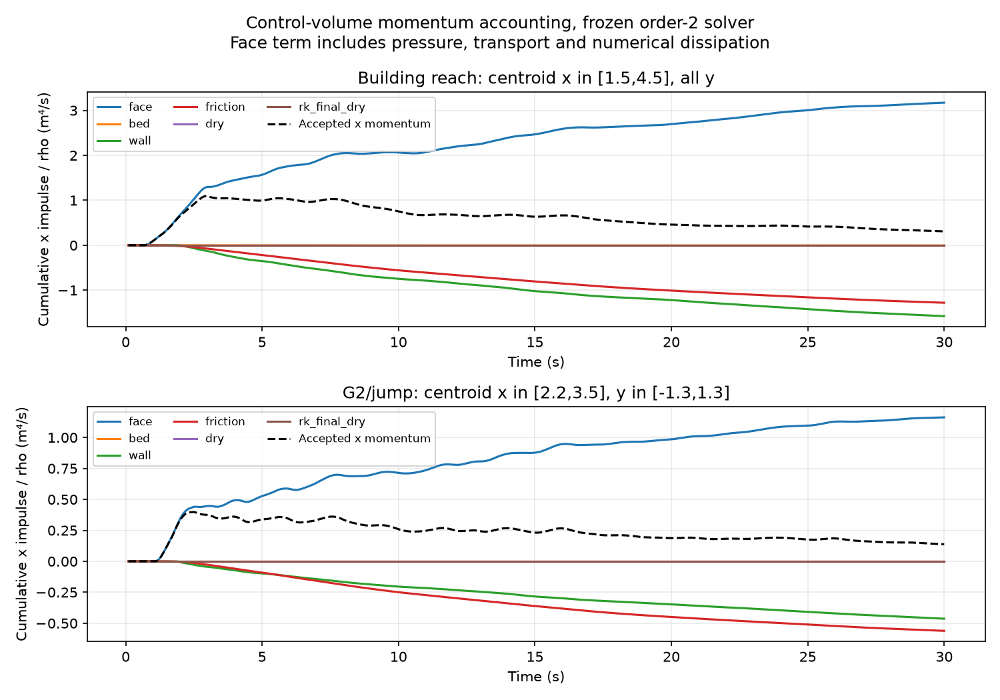

Test 6A: effective geometry and momentum audit
All new simulations are explicitly limited to 30 s for diagnosis. They do not replace the canonical 120 s benchmark, its reviewed anchors, or the earlier full-duration controls. No coefficients, gauge positions, geometry or time offsets were fitted.
Effective geometry
An independent reconstruction of the executed cell edges confirms the 1.0 m internal gate opening, the 0.8 by 0.4 m building at 64 degrees, the dimensioned bank planes, and every exterior WALL slot. All actual saved solver normals and lengths agree with geometric reconstruction to roundoff; building normals point into the solid. Constant-pressure normal and first-moment identities pass. This rules out the specific misplaced-boundary or reversed-normal explanations tested here.
The source DEM differs from that exact drawing representation. At the throat, 19 wet pixels of 0.05 m give a 0.95 m sampled width. Around the building, elevation-threshold pixel areas are 0.405–0.415 m² at 0.02–0.4 m water levels, compared with the 0.32 m² drawing polygon. These are raster diagnostics, not an independent survey of the laboratory walls. The asymmetric raster banks and building halo are recorded without changing the dimensioned geometry or claiming that either representation reproduces the physical experiment better. The post-gate sample window is explicitly truncated and is not reported as the channel width.
Gate, initial conditions and output cadence
The executed throat and adjoining cells have zero bed elevation, without a bed step at the gate. The source DEM wet-throat floor is approximately 0.0000465 m, a negligible vertical offset. AA/CC drawing sections include 0.34 m banks rising 0.155 m inside vertical walls 3.6 m apart; the central flat bed is 2.92 m wide. BB at the throat is rectangular. A rectangular plan view does not imply a flat rectangular cross-section throughout.
The control initializes depths 0.4 m upstream and 0.02 m downstream; over sloping banks this creates a nonuniform water surface. The preceding full-duration uniform-level control barely changed G2 errors. The assessed 120 s run contains all 1,200 frames at 0.1 s spacing; calendar timestamps lie about 1 ms above the nominal grid, and corresponding accepted-momentum states agree to roundoff. At audit time the protected editable input had a 360 s report interval and omitted the explicit Smagorinsky/Cs=0 configuration used to publish conserved-momentum velocities in these assessed runs. Cs=0 adds no eddy stress; this configuration also selects the qualified global momentum path. The default editable-file output path reconstructs velocity differently. It is therefore not an equivalent replay of these assessed decks. The archived 120 s executed input is retained for reproduction. The gate/clock record preserves the distinction.
Momentum accounting
The audit-disabled, enabled, and original frozen runs have bit-identical saved depth and velocity fields. The 30 s frozen run also reproduces the first 30 s of the archived 120 s control exactly. The ledger separates total numerical interior flux, hydrostatic bed correction, wall reaction, Manning friction, Euler dry resets and the final accepted RK2 dry reset. The first receipt pass omitted that final reset (maximum unexplained momentum 0.000108 m4/s); its incomplete record is retained, and the amended receipts reproduce the original fields bit for bit. Both RK2 Euler stages carry weight 1/2. Maximum accepted-momentum closure residual is 5.691e-12 m4/s; independently reconstructed saved-field momentum differs by at most 1.332e-13 m4/s.
The numerical interior-flux term contains pressure, advection and numerical dissipation. Closure establishes that the recorded terms account for the computed momentum; it does not establish that the flow field or jump location is physically correct. Control volumes comprise selected cells with their actual faces, rather than exact rectangular cuts.
Every exterior solid edge already has a reflecting wall condition. Optional tangential wall drag belongs on intended wet physical walls, not interior triangle edges. The preceding all-wall Cw=.01 sensitivity changed G2 speed RMSE from 0.821976 to 0.818514 m/s and level RMSE from 0.055899 to 0.056692 m, which did not resolve the mismatch.
The wall calculation uses the depth after interior volume gathering, whereas the interior Riemann flux uses beginning-stage states. Beginning-stage wall forces are retained as a diagnostic counterfactual and are excluded from the accepted ledger. Their differences do not by themselves prove a defect or establish the G2 cause.
Reconstruction and coordinated refinement
The native order-1 option changes spatial reconstruction and RK2 to forward Euler together. It therefore measures combined method-order sensitivity. A separate existing MUSCL-off switch disables spatial reconstruction while retaining RK2 and the same input and mesh, isolating that spatial contribution. The additional broad-mesh MUSCL-off case was declared adaptively after the coarse controls agreed; it tests whether that result persists with refinement. This is explicitly an adaptive follow-up, not an original blind control. The broader .05 m target mesh covers the whole reservoir, constriction, gate and building through x=8 m with a 2 m graded transition to .1 m background. Its 91,420 cells pass the same exact drawing and connectivity audit. Manning n=.01, Coriolis OFF, Cs=0, free-slip walls and original uniform-depth initial conditions remain fixed. The previous local .05 m mesh is shown for context using its first 30 s; its run completed 120 s.
An independent offline patch audit reproduces the frozen fully-wet Green–Gauss formula for exact linear scalar fields x and y. Constant fields cancel to roundoff, but the gradient matrix is not identity in every fully interior flat-bed TIN cell. In the building reach, the 95th-percentile matrix error is about 0.244 on the control mesh and 0.254 on the broader mesh (dimensionless Frobenius norms). The G2 containing cell itself is nearly linear-exact. Boundary and shoreline cells are excluded. This identifies an operator-consistency limitation for follow-up; it is not a native solver patch test or proof that this limitation causes the G2 error. The linear-field audit preserves the formula source identity and independent computation.
The gauge plots reproduce the panels and axis ranges of UK Figures 4.25 and 4.26, with additional full-range views. The source is the Environment Agency SC120002/R report; geometry follows Figure (a) of the bundled May 2010 Test 6 specification.
Comparisons use only the visibility-selected recovered UCL measurement markers. Original full measured records and independent second-person digitization review remain unavailable. RMSE retains the same segmented time weights and excludes gaps longer than 1 s. These diagnostics do not establish convergence or select a model by one gauge.
| Configuration | G2 level RMSE (m) | G2 speed RMSE (m/s) | G4 speed RMSE (m/s) | G5 level RMSE (m) |
|---|---|---|---|---|
| Original order 2 / coarse | 0.055899 | 0.821976 | 0.325948 | 0.0169816 |
| Native order 1 / coarse | 0.0134274 | 0.286536 | 0.215673 | 0.0176797 |
| No MUSCL, RK2 / coarse | 0.0134674 | 0.285996 | 0.215252 | 0.0176756 |
| Order 2 / broad .05 m | 0.0551549 | 0.830408 | 0.289238 | 0.0221378 |
| No MUSCL, RK2 / broad .05 m | 0.0349594 | 0.238832 | 0.269172 | 0.0159941 |
| Order 2 / previous local .05 m | 0.055046 | 0.836779 | 0.28145 | 0.02311 |










Executed inputs and histories
- Original order 2 / coarse: input, probe history, metrics, identity. - Native order 1 / coarse: input, probe history, metrics, identity. - No MUSCL, RK2 / coarse: input, probe history, metrics, identity. - Order 2 / broad .05 m: input, probe history, metrics, identity. - No MUSCL, RK2 / broad .05 m: input, probe history, metrics, identity. - Order 2 / previous local .05 m: input, probe history, metrics, identity.
Interpretation
The missing G2 slowdown is strongly sensitive to spatial reconstruction. With the same coarse mesh, geometry, Manning n and RK2, disabling MUSCL changes the 20 s G2 state from 0.0271 m depth and 1.639 m/s speed to 0.1136 m and 0.444 m/s; native first order closely agrees. The broader reconstruction-disabled mesh retains the deeper, slower state at 20 s (0.1086 m, 0.501 m/s). Broad refinement with MUSCL enabled leaves the large G2 discrepancy: speed RMSE is 0.8304 m/s, versus 0.8220 m/s on the original mesh. This makes spatial reconstruction and its interaction with the irregular mesh and reflective walls the strongest next engineering lead.
These controls do not establish a correct replacement method or spatial convergence. Disabling reconstruction increases numerical diffusion. Refinement reduces the reconstruction-disabled G2 speed RMSE from 0.2860 to 0.2388 m/s, but increases its level RMSE from 0.01347 to 0.03496 m; other gauges also change. Agreement at one instant or gauge is insufficient to select a default. The geometry/normals and accepted-momentum accounting checks pass, while drawing-versus-DEM differences remain documented. All new hydraulic runs are 30 s diagnostics, with the same provisional recovered measurement subset. Canonical inputs, solver defaults and reviewed regression anchors are preserved.
Next engineering checks
1. Add native constant/linear reconstruction patch tests on irregular TINs; the offline formula audit is not a native test and does not by itself prove the G2 cause. 2. Audit linear-exact interior reconstruction, limiter consistency and reflective-wall face states at the same RK stage, retaining positivity and wet/dry safeguards. 3. Qualify any correction against the existing analytical jump/reflection cases and additional irregular-mesh controls before repeating Test 6A at 30 s and the full 120 s, assessing every available gauge.
Geometry checks. Momentum checks. Non-perturbation checks. Case summary. Front samples. G2 states at 20 s. Report identity.